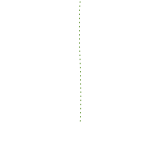
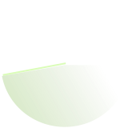
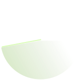
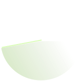

 


- choose a destination -
select a planet on the radar

- selected planet -
kapitalus
data:
> distance: 32AE
> estimated population: 8.7B
other known information:
> Wirtschaft auf Wachstum und Profitmaximierung ausgerichtet
explore to learn more

- selected planet -
varicrementer
data:
> distance: 64AE
> estimated population: 9.1B
other known information:
> Ausrichtung des wirtschaftlichen Wachstums auf verschiedene Faktoren
explore to learn more
- selected planet -
subsistur
data:
> distance: 48AE
> estimated population: 7.6B
other known information:
> Kein ökonomischer Wachstumszwang
explore to learn more